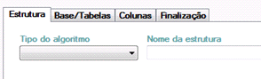

|
Gerar Modelo
|
Previous Top Next |
O menu “Gerar Modelo de Data Mining” é responsável por criar e gerar o modelo de mineração de dados no Analysis Services, para usar esse recurso deve estar instalado e configurado o Analysis Services 2008 SP1;

Aba Estrutura:
Nessa aba é onde deve ser indicado o tipo de algoritmo que será usado e o nome da estrutura, na versão 1.0 do sistema só esta disponível o tipo de algoritmo MTS
Aba Base/Tabelas:
Nessa abaé selecionado a tabela ou view que será utilizada para treinar o modelo de mineração, podendo ser filtrado de acordo o tipo do objeto pelo grupo “Visualizar
Nessa aba serão apresentado os campos da tabela/view selecionado na guia anterior, nessa aba será apresentado o nome do campo, se ele é KEY (chave) e se é predictable (o campo que será previsto).
Nessa guia apresenta um resumo da configuração indicada.